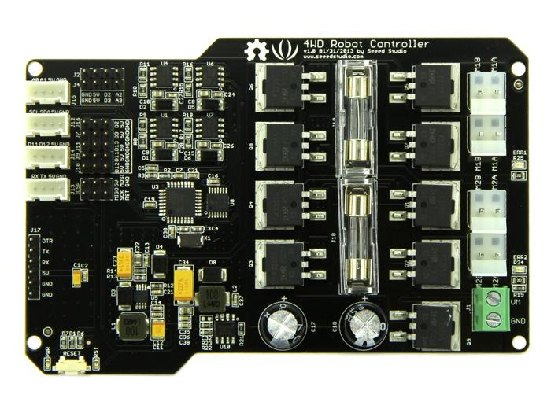

Hercules Dual 15A 6-20V Motor Controller is a high current motor drive control board. including micro controller processor, motor drive circuit, charging circuit and protection circuit. It features a complete solution to power supply, control and drive.
Compared with L298, its half bridge motor controller IR2104 and N-MOSFET take prominent advantage to drive heavy load device with output current even up to 15A. Hercules Dual motor controller is wide power supply designed, so the universal 7.4~11.1V lipo battery in the remote car and model airplane can be applied as well. Fuse will protect the board while overloaded, the correspondent LED show the protection status.
This motor controller is Arduino compatible. Best of all, it is focusing on high- expansion. The reserved standard Grove ports bring you a convenient access to abundant modules on the platform of motor car, such as Servo and Encoder, thus it embraces multi-functions that you can build up versatile masterpieces.
Model:ROB00100M

| Item | Min | Typical | Max | Unit |
|---|---|---|---|---|
| Working Voltage | 6.0 | - | 20.0 | VDC |
| Motor Current per Channel | - | - | 15 | A |
| I/O Voltage | - | 5 | - | VDC |
| I/O Logic(TTL) | - | 5 | - | VDC |
| Temperature Range | -40 | +125 | C |
A: Encoder Connectors.
B: Grove Connectors.
C: Servo Connectors.
D: Atmega328P IC.
E: SPI Connector.
F: Programming Connector.
G: Reset Button.
H: Channel 1 Motor Blow Fuse.
J: Channel 2 Motor Blow Fuse.
K: DC Motor Channel 1 Screw Terminals.
L: DC Motor Channel 2 Screw Terminals.
M: Battery Input Screw Terminals.
Encoder Connectors
There are encoders in the motors of the Hercules platform to measure the motor speed. These two Connectors are used to connect these encoders. The header also supplies 5VDC to power the encoder.
Grove Connectors
These Servo Connectors are setup for standard servo style headers GND, +5V and Signal to control the angle of servo.
Battery Input Screw Terminals
The battery connectors are marked with a GND and VM on the input screw terminal. VM is the positive side of the battery . The GND is the negative side of the battery. Please make sure the input voltage range in 6~20v to avoid any damage.
Motor Screw Terminals
The motor screw terminals are marked with M1A / M1B for channel 1 and M2A / M2B for channel 2. There is no specific polarities for the motors. If the motor runs in the opposite way that you want, you may reverse the motor wires to reverse rotation. Please note that the J21&J20,J22&J23 are parallel connected, that is, you should connect the left 2 motors of the Hercules to one channel, and the right 2 motors to the other channel.
The controller cannot be powered directly from the programming connector which connect to PC for code downloading. The controller must be powered from the Power screw J1, by batteries or a DC supply (6-20V). The controller uses 2 15A slow blow fuses to protect the “H” bridges. After connecting the power supply:
#include "motordriver_4wd.h"
#include <seeed_pwm.h>
void setup()
{
MOTOR.init(); //Init all pin
}
void loop()
{
MOTOR.setSpeedDir(DIRF, 80); //Set motor 1 and motor 2 direction:DIRF, Speed:80 (range:0-100).
delay(3000);
MOTOR.setSpeedDir(DIRR, 80); //Set motor 1 and motor 2 direction:DIRR, Speed:80 (range:0-100).
delay(3000);
}
Note: The motor has two run direction: DIRF(forward) and DIRR(backward).If the motor runs in the opposite way,you may reverse the motor wires to reverse rotation.
The "motorDriverDemo" contains some functions. To figure out how every line affects the turnout, you have to study the comments carefully. Please refer to the below functions defined in the motodriver_4wd Library.
1. setStop1()
2. setStop2()
3. void setSpeedDir(int ispeed, unsigned char dir)
4. void setSpeedDir1(int ispeed, unsigned char dir)
5. void setSpeedDir2(int ispeed, unsigned char dir)
Based on the Hercules Dual 15A 6-20V Motor Controller, we have designed a Remote Control Car which has strong power and good effect of shock absorption.
RFBee Module + Grove - Thumb Joystick + Grove - XBee Carrier + Battery
Rfbee module: used for remote send data.
A Grove - Thumb Joystick: Using it to remote control car.
Grove - XBee Carrier: offers convenience to use RFbee. We can use the MiniUSB Socket to upload code for RFBee.
Note: You can connect to PC using USB cable to replace Battery.
Note: You can reference the Interface of Grove - XBee Carrier wiki for connector.
RFBee Module + Grove - XBee Carrier + Hercules Dual 15A 6-20V Motor Controller
Rfbee module: used for remote send data.
Grove - XBee Carrier: offers convenience to use RFbee. We can use the MiniUSB Socket to upload code for RFBee.
The 15A 6-20V Motor Controller: Drive Motor to rotate.
Note: We use the 4WD hercules mobile robotic platform for the motor controller as show below:

// demo of rfbee send and recv
#include <Arduino.h>
#include <EEPROM.h>
#include <RFBeeSendRev.h>
#include <RFBeeCore.h>
#include <Wire.h>
#define FRAMESTART1 0x53 // data frame start1
#define FRAMESTART2 0x01 // data frame start2
#define FRAMEEND1 0x2f // data frame end1
#define FRAMEEND2 0x45 // data frame end2
void sendToI2C(unsigned char ilen, unsigned char *idata)
{
Wire.beginTransmission(4); // transmit to device #4
for(int i = 0; i<ilen; i++) {Wire.write(idata[i]);} // sends one byte
Wire.endTransmission(); // stop transmitting
}
void setup(){
pinMode(10, OUTPUT);
RFBEE.init();
Wire.begin();
Serial.begin(38400);
Serial.println("ok");
}
unsigned char rxData1[200]; // data len
unsigned char len1; // len
unsigned char srcAddress1;
unsigned char destAddress1;
char rssi1;
unsigned char lqi1;
int result1;
unsigned char cntGetDta = 5;
void loop()
{
if(RFBEE.isDta())
{
result1 = receiveData(rxData1, &len1, &srcAddress1, &destAddress1, (unsigned char *)&rssi1 , &lqi1);
Serial.println(len1);
for(int i = 0; i< len1; i++)
{
Serial.print(rxData1[i]);Serial.print("\t");
}
Serial.println();
sendToI2C(6, rxData1);
}
}
The Remote Control Car besed on the Hercules Dual 15A 6-20V Motor Controller and 4WD hercules mobile robotic platform can load a bucket of water which capicity is 19L.
4WD Robot Controller Eagle File
4WD Robot Controller Schematic.pdf
File:Motor Controller Library
If you have questions or other better design ideas, you can go to our forum or wish to discuss.
Copyright (c) 2008-2016 Seeed Development Limited (www.seeedstudio.com / www.seeed.cc)